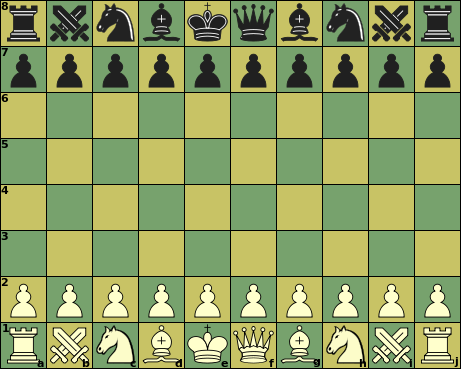

Sliding capture or non-capture,
can be blocked on any square along the ray
|  |
Initial setup
e1, e8: King
|
Click on a piece below to see its moves
|
|
Sliding capture or non-capture, | ||||||||||
| Unblockable leap (capture or non-capture) | |||||||||||
| Non-capture only | |||||||||||
| Capture only | |||||||||||
:
:
:
:
| Piece | ID | value | Moves (Betza notation) | Remarks |
| King | K | - | K | Can castle with Rook, moving 3 or 4 steps to b- or i-file |
| Queen | Q | 9.5 | RB or Q | |
| Janus | J | 8.75 | BN | |
| Rook | R | 5 | R | |
| Bishop | B | 3.5 | B | Color-bound |
| Knight | N | 3 | N | |
| Pawn | P | 1 | mfWcfF | Promotes to Q, J, R, B, or N on reaching last rank |
A King that has not moved before can move to the square neighboring a Rook that has not moved before, in which case that Rook is moved to the square next to the King on the other side. This is only allowed if all squares between King and Rook are empty, when the King is not in check on the square it came from, and would not be in check on any of the squares it skipped over.
The Janus pieces are extra, and the board is expanded to accomodate them. The King starts on the other side of the Queen. Castling is asymmetric; the King moves 4 steps on long castling, 3 steps on short.
It is not possible to force checkmate on a bare King with just a single Bishop or Knight (in addition to your own King). Two Knights cannot do that either. The Janus can force checkmate against a bare King.
Bishops are confined to squares of a single color. Having Bishops on both colors compensates this weakness, and is worth an extra 0.5 on top of their added value.
As Janus is nearly equal in value to Queen, under-promotion to it is common, and there is virtually never any need to promote to R, B or N.
The super-pieces (Q, J) devaluate by the presence of lower-valued opponent pieces. As a result trading Q for R + B is in general a good trade when you still have both J, as the latter gain in value by eliminating the opponent's R and B, which is more compensation than the intrinsic value differene between Q and R + B.